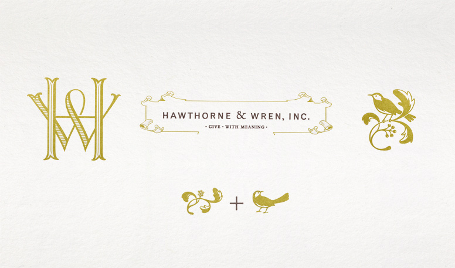
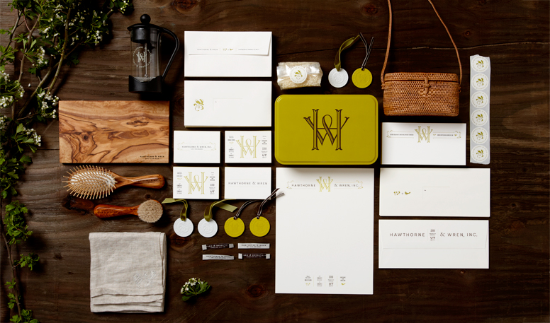
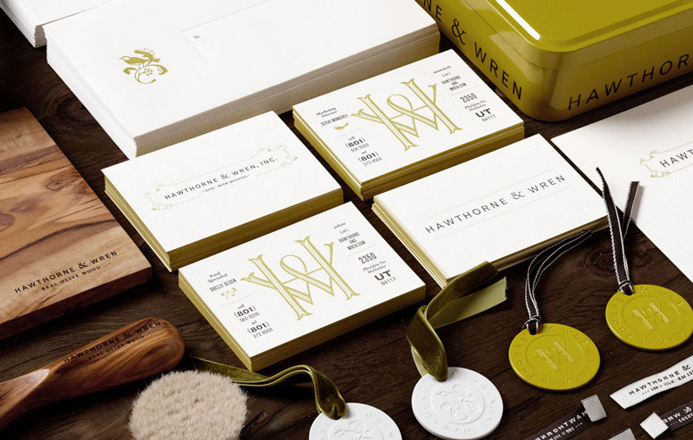
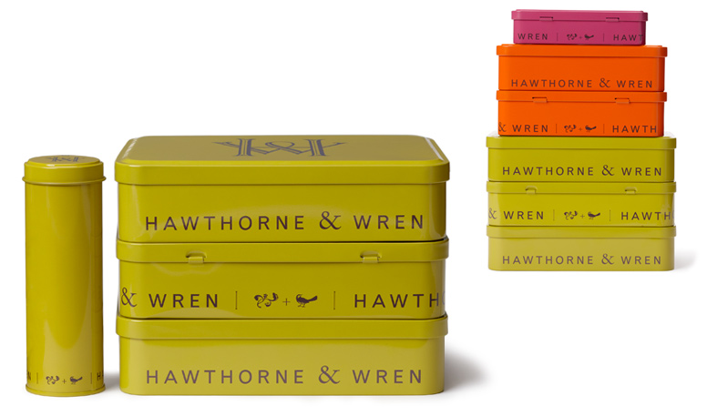
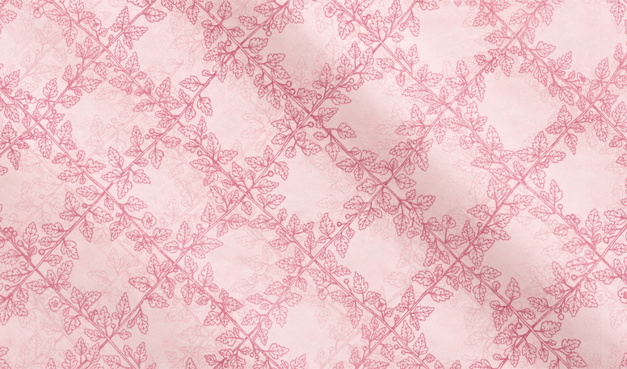

Hawthorn & Wren
Art direction and design for Hawthorn & Wren’s new identity, packaging, tags, embroidery and more by Kevin Cantrell Design.
It’s amazing how much more interesting these branding projects are with a bit of time spent on the presentation. The wood, arrangement, flowers and camera angles help the project come to live.